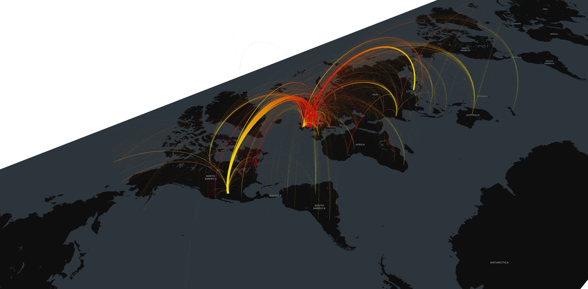

A) Adding coordinates to Places table
Linking Place data to Getty identifiers, which enabled the addition of longitude and latitude coordinates to the place entries. This enables geospatial analysis of the Place table composition as well as the geospatial analysis of all objects linked to those place names.
Future Work:
- Extending the linkages to other services (NLS historic maps, UK Data Service, etc.).
- Creating a search app that compares retrieved information from multiple geocoding services.
- Setting up connections with HeritageGateway.
Dataset Sample: places.json
B & C) Mapping & Museum Counts
Maps were created to show the locations of objects based on the "place made" field content, allowing for analysis of the distribution of object origins. Visualisations also show the distribution of objects across various countries.
Future Work:
Extracting and visualising location information mentioned in other fields and gamification for exploring objects through maps.
D) Google Analytics Integration
Combined visitor numbers with geocoded location information to show whether individuals from different countries viewed objects made in their own countries or elsewhere.
Future Work:
Enhancing the visualisation by integrating real-time information and exploring other monitoring tools.
Visualization Output: kepler.gl.png
E) Railway posters locations information
Mentions of advertised travel destinations were extracted from metadata related to a sub-set of railway posters. The extracted information was then visualised on a map.
Future Work:
- Extracting information from the full set of railway posters and visual materials.
- Identifying other sub-collections that can be similarly visualised.
- Experimenting with better approaches to visualising objects with multiple locations included within their metadata.
2. Authority Files & Data Linking
A) Search Across External Collections
A script was written to query search terms across publicly available authority files of other GLAM institutions to review different institutional approaches.
B) Royal Society Past Fellows Dataset
Identified 967 matches across Collections Online and the RS Past Fellows dataset. This revealed 107 entries with mismatched or missing birth/death dates and enabled the addition of approximately 700 identifiers to Wikidata.
C) Whipple Collections
While an export was provided, the lack of authority files within the dataset necessitates a large deduplication task before digital work can proceed.
D) Darwin Correspondence Project
Authority entries generated from the project's online dataset resulted in roughly 600 pairs of matched entries across datasets.
E) Wikidata Link Accuracy Check
Using a pipeline with Google Gemini, we assessed the accuracy of Wikidata identifiers associated with people and companies in the Mimsy dataset. The evaluation identified 222 wrong links, nearly half of which were caused by the non-existence of a relevant Wikidata page.
F) Duplicate Entry Identification
A digital application was created to identify potential duplicate entries within Collections Online records. By combining fuzzy matching with LLM-based evaluation, we identified 665 pairs of entries with a very high likelihood of being duplicates.
3. SMG Journal Analysis
A) Identifying Objects with References
Several LLM models were tested for identifying objects referred to in the Science Museum Group Journal (SMGJ). Key challenges included distinguishing museum collection objects from figurative references and managing inconsistent referencing standards in existing texts and images.
Technical Obstacles & Outcomes:
Initial tests with Gemini resulted in two specialized lists: one for all collection-specific objects identified in texts, and another linking identified objects with their quoted reference numbers.
Object Mentions: smgj_mentions.json
Sentence Extraction: smgj_sentences.json
4. Historic Catalogues
A) Digitised Historic Catalogues
A survey was undertaken to identify and download digitised versions of historic Science Museum Catalogues acquired from the curatorial team.
Catalogue Survey Sample: museum_catalogues.json
B) Catalogue Transformation Pipeline
A pipeline was developed to transform images and PDFs of historic catalogues into structured datasets, incorporating entity and schema information extraction.
Technical Implementation
The resulting datasets were made available via SharePoint and a visual catalogue explorer on GitHub.